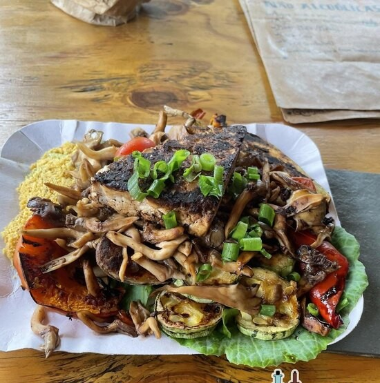
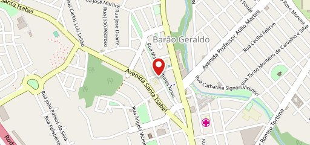

Sanduba de porco desfiada
Desfiada no ponto, com os molhos da casa pra escolher — pimenta defumada e tonkatsu.
Barão Geraldo · Campinas/SP
Sandubas na chapa, molhos com pimenta que viram assunto, chope bem tirado e música ao vivo de quarta a domingo. Comida e cultura no mesmo endereço — desde o primeiro grau de bateria até a última queijada.
4,7 no Google · ~305 avaliações · quem foi, volta
Os destaques que o público cita nas avaliações — ticket médio R$ 20–40 por pessoa. Cardápio completo na casa e pelo WhatsApp.
Música ao vivo de quarta a domingo — rock, reggae e tributos no quintal.
Som na varanda
a semana começa cedo
Música ao vivo
sobe o volume no fim da tarde
Noite de show
chega antes das 20h
Tarde + noite ao vivo
mesa de madeira, sol ou lâmpada
📍 A programação confirmada da semana sai primeiro no @reune_comida_cultura — e em breve aqui nesta página.





"Estava muito bom… ficou ainda melhor com os molhos oferecidos — a pimenta defumada e o tonkatsu são diferenciados."Vini · avaliação no Google
| Segunda | Fechado |
| Terça | Fechado |
| Quarta | 11h – 22h |
| Quinta | 11h – 22h |
| Sexta | 11h – 22h |
| Sábado | 11h – 22h |
| Domingo | 11h – 22h |